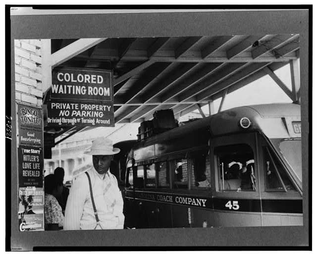
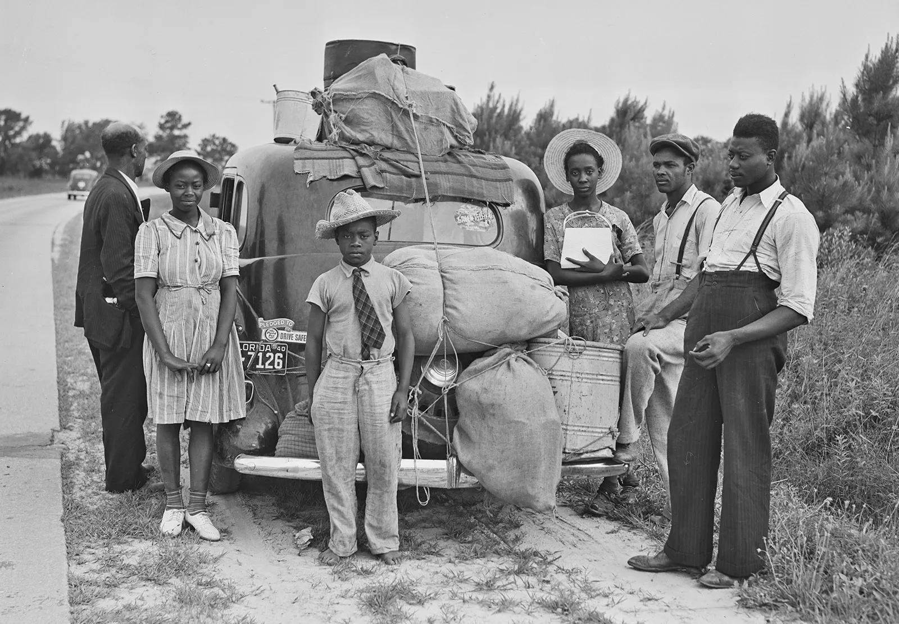
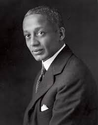
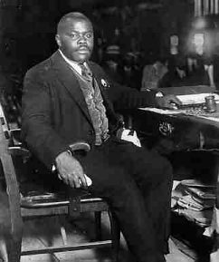
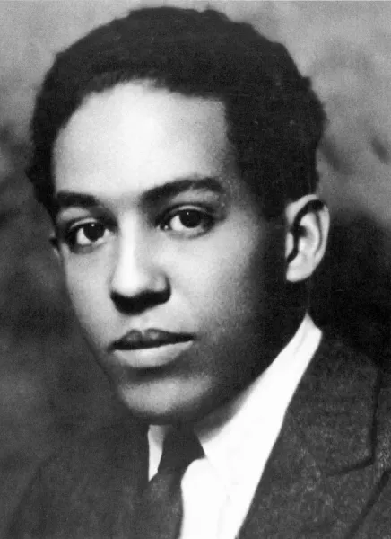

![A cinematic collage depicting the Harlem Renaissance as a movement of visibility and self-assertion. In the foreground, a well-dressed Black man in a suit and fedora stands beside a woman in an elegant beaded dress and pearls; both face forward with calm, confident expressions, illuminated by a warm, golden spotlight emerging from darkness. Behind them, a lively Harlem street scene unfolds at night, with glowing streetlights, brownstone buildings, a jazz club sign, and musicians playing trumpet and piano amid blurred figures suggesting motion and nightlife. In the faded background, ghostlike images reference historical struggles, including a "Colored Entrance" sign, a steam train symbolizing the Great Migration, and silhouettes of World War I soldiers. Radiating geometric light patterns inspired by Harlem Renaissance art frame the figures. Centered over the image, in glowing gold Art Deco-style serif text, reads "Fame, Harlem, and the Right to Be Seen," with the subtitle "The Harlem Renaissance" beneath it.](images/harlem_renaissance/ch24_lec3_title_slide.jpg)
Before We Begin
Three Questions for Today
- Where did Harlem come from — and why the 1920s?
- What did the New Negro movement claim, and who was claiming it?
- How did the art itself — poetry, music, painting, photography — make that claim?
Section I
Migration, war, and the breaking point
The World They Were Leaving
- Jim Crow — a total system, not merely segregated seating
- No practical right to vote; locked into sharecropping debt
- Constant threat of racial violence — 4,000+ lynchings, 1877–1950
- Lynchings were public spectacles: photographed, attended, sold as postcards

Jim Crow America · ca. 1900–1920 · Public Domain
The Great Migration
- 1910–1930: approximately 1.6 million Black Americans left the South
- Destinations: Chicago, Detroit, Philadelphia, New York
- Pull: wartime industrial labor demand; the Chicago Defender campaigns
- Push: Jim Crow, sharecropping, the boll weevil, and violence

The Great Migration · 1910s–1930s · Public Domain
Why Harlem?
- Overbuilt by speculators — white tenants never materialized
- Philip Payton convinced landlords to rent to Black tenants: door opened, and didn't close
- By early 1920s: largest Black urban community in the United States
- Newspapers, churches, theaters, nightclubs, colleges, political organizations — density of institutions
The War's Broken Promise
- 380,000 Black Americans served in World War One
- Segregated units, dangerous assignments, officers who treated them as less than human
- Du Bois argued: demonstrate patriotism — America will acknowledge citizenship
- It did not. Black veterans were lynched in their uniforms
We Return Fighting
⏸ Pause & Reflect
Du Bois's essay was a direct response to the broken promise of the war. What did his generation of Black Americans do with that rage?
- Accepted the existing racial hierarchy as permanent
- Emigrated to Africa under Marcus Garvey's program
- Produced one of the most extraordinary explosions of cultural creativity in American history
- Retreated from political engagement entirely
Section II
A demand, not a description
Alain Locke — The Manifesto
- The New Negro anthology, 1925 — poetry, fiction, essays, visual art
- Older generation: sought white approval, proved worthiness by white standards
- New generation: "shaking off the psychology of imitation and implied inferiority"
- The New Negro is urban, educated, self-possessed, unapologetic

Alain Locke · 1885–1954 · Howard University · Public Domain
The Infrastructure
- NAACP magazine
- Edited by Du Bois
- Peak: 100,000 subscribers
- Fiction, poetry, photography, politics
- Urban League magazine
- Ed. Charles S. Johnson
- Launched Hughes, Hurston, Cullen
- Focus on literary culture
- National Black newspaper
- ~250,000 readers
- Drove the Great Migration
- Images of Black achievement
Who You Need to Know
- W.E.B. Du Bois — intellectual elder, editor of The Crisis, full citizenship now
- Langston Hughes — the poet; blues as serious art without apology
- Zora Neale Hurston — novelist, anthropologist; the folk tradition as monument
- Aaron Douglas — visual artist; African heritage + modernism fused into heroic imagery
- Marcus Garvey — Black nationalism, UNIA; a fundamentally different answer to the same problem
Marcus Garvey — A Different Answer
- Arrived New York from Jamaica, 1916 — built the largest Black mass movement in American history within four years
- UNIA claimed 2+ million members — parades, uniforms, flags through Harlem streets
- Where Du Bois demanded inclusion in America: Garvey questioned whether that society was worth being included in
- Black Star Line — a Black-owned international shipping company, funded by ordinary Black Americans' savings

Marcus Garvey · 1887–1940 · Founder, Universal Negro Improvement Association
Du Bois vs. Garvey — The Real Disagreement
- Full citizenship inside American democracy
- Political rights now — not after proving economic worthiness
- Black Americans are already American; demand what belongs to you
- Called Garvey "the most dangerous enemy of the Negro race"
- Build Black institutions outside the white system entirely
- Economic sovereignty first — Black capitalism, Black shipping, Black nation
- Pan-African vision: a free Black nation in Africa as ultimate goal
- Called Du Bois "a white man's Negro"
⏸ Pause & Reflect
Du Bois and Garvey were both responding to Red Summer, Jim Crow, and the broken promise of the war. One said: demand inclusion. The other said: build your own. What experiences or assumptions might lead a person to each position?
Section III
Langston Hughes — the blues as serious art
Langston Hughes
- Harlem-born, prolific, politically engaged
- Deliberate choice: took Black vernacular culture seriously as subject matter
- The blues, the jazz club, the rent party — not embarrassments to translate, but the material itself
- Made the poem perform the music it described

Langston Hughes · 1902–1967 · Poet of the Harlem Renaissance
The Rent Party — What Hughes Was Elevating
- Harlem rents were high — landlords charged Black tenants premium rates in a segregated market
- Solution: throw a Saturday night party, charge 25–50 cents admission, hire a pianist, cover the rent
- Entirely Black spaces — invisible to white Harlem; incubators for the rawest, most authentic blues and jazz
- A micro-economy of mutual aid operating below the radar of the formal economy
"The Weary Blues" (1926)
Rocking back and forth to a mellow croon,
I heard a Negro play.
Down on Lenox Avenue the other night
By the pale dull pallor of an old gas light
He did a lazy sway. . . .
He did a lazy sway. . . .
To the tune o' those Weary Blues.
With his ebony hands on each ivory key
He made that poor piano moan with melody.
O Blues!
"The Weary Blues" — What Hughes Did
- A blues musician on Lenox Avenue — treated with the seriousness of classical poetry
- The blues was not, in 1926, considered "high art" by mainstream white culture
- Hughes said: it is
- The form of the poem performs the music — it doesn't just describe it
"I, Too" (1926)
I am the darker brother.
They send me to eat in the kitchen
When company comes,
But I laugh,
And eat well,
And grow strong.
Tomorrow,
I'll be at the table
When company comes.
Nobody'll dare
Say to me,
"Eat in the kitchen,"
Then.
Besides,
They'll see how beautiful I am
And be ashamed —
I, too, am America.
"I, Too, Am America"
- Twelve lines. The New Negro claim in a single sentence.
- Not: please include me. Not: I have proven my worthiness.
- "I, too, am America" — already, inherently, without your permission
- The tense: tomorrow — not describing the present; announcing the future
⏸ Pause & Reflect
Both poems make a claim about Black identity and Black culture. The Weary Blues makes its argument through form — the poem performs the music. I, Too makes its argument through tense and grammar. What is each poem saying, and how does its form support that argument?
Section IV
The cost of visibility — and the depth of resilience
Black Wall Street — What Was Built
- Greenwood district, Tulsa, Oklahoma — the most concentrated demonstration of Black entrepreneurial achievement in American history
- Banks, hotels, law offices, medical practices, two high schools, a library, a newspaper — the Tulsa Star
- Property values exceeded $1.5 million in 1921 dollars — built in one generation by people whose parents had been enslaved
- Black dollars circulated through Greenwood multiple times before leaving — a genuine local economy, not a coincidence
Greenwood — Black Wall Street · Tulsa, Oklahoma · Documentary
May 31 – June 1, 1921
- Dick Rowland — a disputed incident set in motion by a newspaper headline and years of white resentment
- White mob — eventually thousands, some deputized by local police — moved on Greenwood with firearms and torches
- 35 city blocks burned: homes, banks, churches, schools, the hospital, the Tulsa Star
- Estimated 100–300 Black Tulsans killed · 10,000 left homeless · 6,000 arrested — the victims, not the perpetrators
The Suppression of Memory
- Oklahoma textbooks omitted the massacre for decades — survivors pressured into silence
- City of Tulsa refused to compensate residents; actively blocked insurance claims
- One of the most deliberate acts of historical erasure in American history
- Many Americans first encountered it through the TV series Watchmen in 2019
Visibility as Target
Resilience as Argument
- Despite total destruction and no government restitution — many Black Tulsans returned and began rebuilding within months
- Within years, Greenwood had recovered enough commercial infrastructure to continue functioning as a Black economic hub
- The decision to rebuild rather than abandon was itself a statement about what Greenwood represented
- The same tradition as the Great Migration and the Harlem Renaissance: build your own, even when — especially when — what you built has been destroyed
⏸ Pause & Reflect
Greenwood was built through exactly the self-reliance and excellence the New Negro movement celebrated. It was destroyed in two days by a white mob, with the cooperation of local government. What does Tulsa tell us about the relationship between cultural and economic achievement and political power?
- Excellence is sufficient — Greenwood proved Black capacity regardless of the outcome
- Excellence without political power is permanently vulnerable
- Rebuilding after the massacre was the more important achievement than building before it
- Both A and B are true simultaneously, and that tension has never been resolved
Closing
They chose to build rather than beg
Heroic Resistance Through Excellence
- The Great Migration — a calculated departure from a system designed to be inescapable
- Harlem and Greenwood — entrepreneurial vision that built cultural capitals and entire economies in one generation
- Hughes and Hurston — trusted their own vernacular traditions without apology, without translation, without permission
What Excellence Could and Couldn't Do
- Violence, segregation, and exclusion remained brutal realities — Tulsa made that painfully clear
- Yet the work outlasted those realities. Hughes's poetry. Hurston's novel. Greenwood's proof of concept.
- Jim Crow fell to the NAACP's legal strategy and the Montgomery Bus Boycott — built on a foundation this generation laid
The Question You Leave With
Is cultural excellence the foundation on which political change becomes possible?
Or does it operate on a separate track — producing its own permanent transformation in the human record while political systems change through other means?
Part B — Independent Study
- The new visual economy of the 1920s — why images became political weapons
- James Van Der Zee — the portrait as argument against a century of caricature
- Aaron Douglas — African heritage + modernism as heroic visual language
- Jazz as community infrastructure — the Savoy, rent parties, race records, and the Cotton Club
- Du Bois's "Criteria of Negro Art" — read the full essay